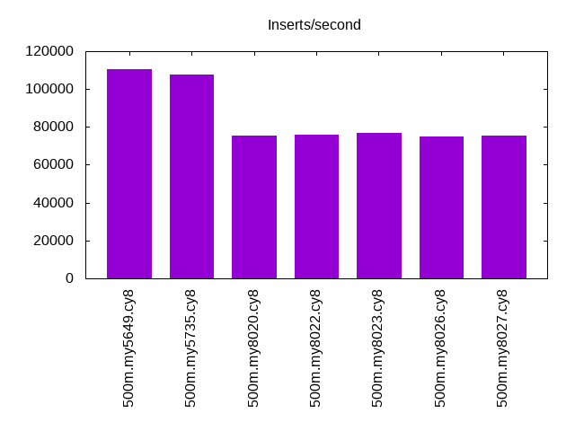
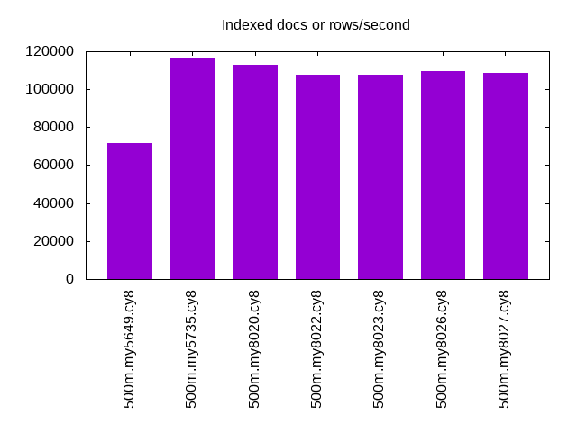
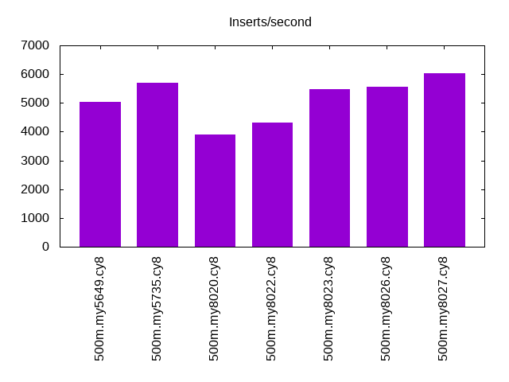
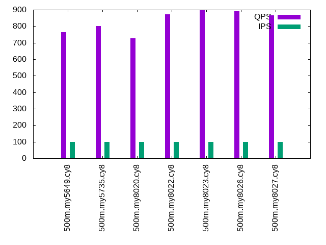
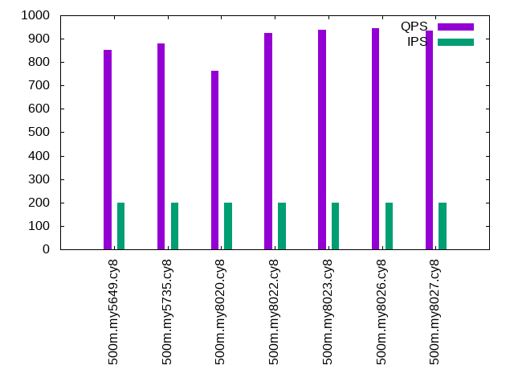
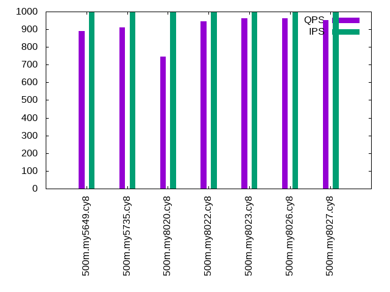

Introduction
This is a report for the insert benchmark with 500M docs and 1 client(s). It is generated by scripts (bash, awk, sed) and Tufte might not be impressed. An overview of the insert benchmark is here and a short update is here. Below, by DBMS, I mean DBMS+version.config. An example is my8020.c10b40 where my means MySQL, 8020 is version 8.0.20 and c10b40 is the name for the configuration file.
The test server is an Intel NUC with 4 cores, 16G RAM and a Samsung 970 EVO. More details are here. Clients and the DBMS share one server. The per-database configs are in the per-database subdirectories here.
The tested DBMS are:
- my5649.cy8 - MySQL 5.6.49, InnoDB and the cy8 config
- my5735.cy8 - MySQL 5.7.35, InnoDB and the cy8 config
- my8020.cy8 - MySQL 8.0.20, InnoDB and the cy8 config
- my8022.cy8 - MySQL 8.0.22, InnoDB and the cy8 config
- my8023.cy8 - MySQL 8.0.23, InnoDB and the cy8 config
- my8026.cy8 - MySQL 8.0.26, InnoDB and the cy8 config
- my8027.cy8 - MySQL 8.0.27, InnoDB and the cy8 config
Contents
- Summary
- l.i0: load without secondary indexes
- l.x: create secondary indexes
- l.i1: continue load after secondary indexes created
- q100.2: range queries with 100 insert/s per client, 2nd loop
- q200.2: range queries with 200 insert/s per client, 2nd loop
- q400.2: range queries with 400 insert/s per client, 2nd loop
- q600.2: range queries with 600 insert/s per client, 2nd loop
- q800.2: range queries with 800 insert/s per client, 2nd loop
- q1000.2: range queries with 1000 insert/s per client, 2nd loop
Summary
The numbers are inserts/s for l.i0 and l.i1, indexed docs (or rows) /s for l.x and queries/s for q*.2. The values are the average rate over the entire test for inserts (IPS) and queries (QPS). The range of values for IPS and QPS is split into 3 parts: bottom 25%, middle 50%, top 25%. Values in the bottom 25% have a red background, values in the top 25% have a green background and values in the middle have no color. A gray background is used for values that can be ignored because the DBMS did not sustain the target insert rate. Red backgrounds are not used when the minimum value is within 80% of the max value.
| dbms | l.i0 | l.x | l.i1 | q100.2 | q200.2 | q400.2 | q600.2 | q800.2 | q1000.2 |
|---|---|---|---|---|---|---|---|---|---|
| 500m.my5649.cy8 | 110278 | 71392 | 5045 | 765 | 853 | 882 | 881 | 890 | 889 |
| 500m.my5735.cy8 | 107782 | 115979 | 5698 | 800 | 881 | 907 | 920 | 919 | 911 |
| 500m.my8020.cy8 | 75278 | 112915 | 3912 | 727 | 762 | 760 | 764 | 741 | 747 |
| 500m.my8022.cy8 | 75700 | 107827 | 4310 | 872 | 926 | 956 | 968 | 949 | 946 |
| 500m.my8023.cy8 | 76958 | 107433 | 5482 | 896 | 937 | 982 | 967 | 958 | 963 |
| 500m.my8026.cy8 | 75030 | 109791 | 5559 | 891 | 945 | 963 | 970 | 979 | 963 |
| 500m.my8027.cy8 | 75290 | 108529 | 6042 | 865 | 935 | 977 | 973 | 964 | 952 |
This lists the average rate of inserts/s for the tests that do inserts concurrent with queries. For such tests the query rate is listed in the table above. The read+write tests are setup so that the insert rate should match the target rate every second. Cells that are not at least 95% of the target have a red background to indicate a failure to satisfy the target.
| dbms | q100.2 | q200.2 | q400.2 | q600.2 | q800.2 | q1000.2 |
|---|---|---|---|---|---|---|
| my5649.cy8 | 100 | 200 | 399 | 599 | 798 | 999 |
| my5735.cy8 | 100 | 200 | 399 | 599 | 799 | 998 |
| my8020.cy8 | 100 | 200 | 400 | 599 | 799 | 999 |
| my8022.cy8 | 100 | 200 | 399 | 599 | 799 | 998 |
| my8023.cy8 | 100 | 200 | 399 | 599 | 799 | 999 |
| my8026.cy8 | 100 | 200 | 399 | 599 | 799 | 998 |
| my8027.cy8 | 100 | 200 | 399 | 599 | 799 | 999 |
| target | 100 | 200 | 400 | 600 | 800 | 1000 |
l.i0
l.i0: load without secondary indexes. Graphs for performance per 1-second interval are here.
Average throughput:
Insert response time histogram: each cell has the percentage of responses that take <= the time in the header and max is the max response time in seconds. For the max column values in the top 25% of the range have a red background and in the bottom 25% of the range have a green background. The red background is not used when the min value is within 80% of the max value.
| dbms | 256us | 1ms | 4ms | 16ms | 64ms | 256ms | 1s | 4s | 16s | gt | max |
|---|---|---|---|---|---|---|---|---|---|---|---|
| my5649.cy8 | 96.814 | 2.795 | 0.305 | 0.083 | 0.001 | 0.003 | 0.358 | ||||
| my5735.cy8 | 98.342 | 1.393 | 0.259 | 0.002 | 0.004 | 0.110 | |||||
| my8020.cy8 | 99.564 | 0.403 | 0.033 | nonzero | 0.109 | ||||||
| my8022.cy8 | 99.716 | 0.206 | 0.078 | nonzero | 0.119 | ||||||
| my8023.cy8 | 99.722 | 0.199 | 0.079 | nonzero | 0.119 | ||||||
| my8026.cy8 | 99.695 | 0.273 | 0.032 | nonzero | 0.085 | ||||||
| my8027.cy8 | 99.695 | 0.272 | 0.032 | nonzero | 0.112 |
Performance metrics for the DBMS listed above. Some are normalized by throughput, others are not. Legend for results is here.
ips qps rps rmbps wps wmbps rpq rkbpq wpi wkbpi csps cpups cspq cpupq dbgb1 dbgb2 rss maxop p50 p99 tag 110278 0 965 3.8 451.8 37.2 0.009 0.035 0.004 0.346 13966 44.0 0.127 16 32.9 73.4 10.7 0.358 111079 75355 500m.my5649.cy8 107782 0 0 0.0 461.6 36.7 0.000 0.000 0.004 0.349 12026 45.5 0.112 17 32.9 73.5 11.0 0.110 107786 95695 500m.my5735.cy8 75278 0 0 0.0 399.8 26.9 0.000 0.000 0.005 0.366 19264 39.9 0.256 21 32.8 73.3 11.1 0.109 75231 70657 500m.my8020.cy8 75700 0 0 0.0 403.7 27.0 0.000 0.000 0.005 0.366 8485 40.3 0.112 21 32.8 73.3 11.1 0.119 75717 71050 500m.my8022.cy8 76958 0 0 0.0 409.2 27.5 0.000 0.000 0.005 0.366 8798 40.7 0.114 21 32.8 73.3 11.1 0.119 76816 71822 500m.my8023.cy8 75030 0 0 0.0 396.9 26.8 0.000 0.000 0.005 0.366 8567 39.3 0.114 21 32.8 73.3 11.1 0.085 74920 71050 500m.my8026.cy8 75290 0 0 0.0 399.4 26.9 0.000 0.000 0.005 0.366 8607 40.0 0.114 21 32.8 73.3 11.1 0.112 75217 71118 500m.my8027.cy8
l.x
l.x: create secondary indexes.
Average throughput:
Performance metrics for the DBMS listed above. Some are normalized by throughput, others are not. Legend for results is here.
ips qps rps rmbps wps wmbps rpq rkbpq wpi wkbpi csps cpups cspq cpupq dbgb1 dbgb2 rss maxop p50 p99 tag 71392 0 423 64.4 729.9 86.2 0.006 0.923 0.010 1.237 2461 18.7 0.034 10 67.8 108.3 10.8 0.026 NA NA 500m.my5649.cy8 115979 0 688 100.7 1214.3 128.0 0.006 0.889 0.010 1.130 7068 23.0 0.061 8 73.6 114.2 11.1 0.016 NA NA 500m.my5735.cy8 112915 0 651 98.7 1234.6 123.9 0.006 0.895 0.011 1.124 7317 23.0 0.065 8 73.3 113.8 11.3 0.016 NA NA 500m.my8020.cy8 107827 0 648 94.2 1186.8 118.5 0.006 0.895 0.011 1.126 6100 22.8 0.057 8 73.3 113.8 11.3 0.019 NA NA 500m.my8022.cy8 107433 0 640 93.7 1194.9 118.3 0.006 0.893 0.011 1.128 6584 22.9 0.061 9 73.3 113.9 11.2 0.016 NA NA 500m.my8023.cy8 109791 0 643 95.7 1218.8 120.8 0.006 0.893 0.011 1.127 6771 23.0 0.062 8 73.3 113.9 11.2 0.011 NA NA 500m.my8026.cy8 108529 0 1610 141.4 2236.7 141.2 0.015 1.334 0.021 1.333 14685 66.9 0.135 25 73.3 113.9 11.2 0.016 NA NA 500m.my8027.cy8
l.i1
l.i1: continue load after secondary indexes created. Graphs for performance per 1-second interval are here.
Average throughput:
Insert response time histogram: each cell has the percentage of responses that take <= the time in the header and max is the max response time in seconds. For the max column values in the top 25% of the range have a red background and in the bottom 25% of the range have a green background. The red background is not used when the min value is within 80% of the max value.
| dbms | 256us | 1ms | 4ms | 16ms | 64ms | 256ms | 1s | 4s | 16s | gt | max |
|---|---|---|---|---|---|---|---|---|---|---|---|
| my5649.cy8 | 71.645 | 14.300 | 11.932 | 1.711 | 0.411 | 0.882 | |||||
| my5735.cy8 | 66.947 | 22.285 | 9.624 | 0.848 | 0.296 | 0.714 | |||||
| my8020.cy8 | 60.660 | 23.285 | 12.009 | 3.744 | 0.301 | 0.677 | |||||
| my8022.cy8 | 63.291 | 22.659 | 10.671 | 3.106 | 0.272 | 0.701 | |||||
| my8023.cy8 | 62.426 | 26.471 | 9.795 | 1.161 | 0.147 | 0.690 | |||||
| my8026.cy8 | 61.944 | 27.211 | 9.871 | 0.699 | 0.276 | 0.735 | |||||
| my8027.cy8 | 70.207 | 19.006 | 9.925 | 0.687 | 0.174 | 0.726 |
Performance metrics for the DBMS listed above. Some are normalized by throughput, others are not. Legend for results is here.
ips qps rps rmbps wps wmbps rpq rkbpq wpi wkbpi csps cpups cspq cpupq dbgb1 dbgb2 rss maxop p50 p99 tag 5045 0 2624 39.9 3611.2 132.1 0.520 8.108 0.716 26.817 14357 19.1 2.845 151 101.8 144.2 10.8 0.882 1398 499 500m.my5649.cy8 5698 0 2862 44.7 4011.1 143.2 0.502 8.036 0.704 25.728 17739 25.3 3.113 178 101.8 144.4 11.1 0.714 2349 150 500m.my5735.cy8 3912 0 1982 31.0 3483.2 101.5 0.507 8.105 0.890 26.575 22538 27.5 5.761 281 101.4 143.9 11.3 0.677 1099 100 500m.my8020.cy8 4310 0 2171 33.9 3773.8 110.4 0.504 8.060 0.876 26.226 18396 22.1 4.268 205 101.4 143.9 11.3 0.701 1299 100 500m.my8022.cy8 5482 0 2762 43.2 4845.1 141.6 0.504 8.061 0.884 26.448 20797 25.0 3.793 182 101.4 143.9 11.2 0.690 2447 100 500m.my8023.cy8 5559 0 2802 43.8 4863.3 142.4 0.504 8.067 0.875 26.234 20605 25.3 3.707 182 101.4 143.9 11.2 0.735 2597 100 500m.my8026.cy8 6042 0 3061 47.8 5228.4 153.3 0.507 8.105 0.865 25.986 22266 25.9 3.685 171 101.4 143.9 11.2 0.726 2647 100 500m.my8027.cy8
q100.2
q100.2: range queries with 100 insert/s per client, 2nd loop. Graphs for performance per 1-second interval are here.
Average throughput:
Query response time histogram: each cell has the percentage of responses that take <= the time in the header and max is the max response time in seconds. For max values in the top 25% of the range have a red background and in the bottom 25% of the range have a green background. The red background is not used when the min value is within 80% of the max value.
| dbms | 256us | 1ms | 4ms | 16ms | 64ms | 256ms | 1s | 4s | 16s | gt | max |
|---|---|---|---|---|---|---|---|---|---|---|---|
| my5649.cy8 | 3.588 | 57.756 | 38.216 | 0.397 | 0.044 | 0.039 | |||||
| my5735.cy8 | 6.529 | 52.956 | 40.124 | 0.318 | 0.073 | 0.053 | |||||
| my8020.cy8 | 3.619 | 46.887 | 49.101 | 0.347 | 0.046 | 0.029 | |||||
| my8022.cy8 | 10.081 | 47.753 | 41.828 | 0.283 | 0.055 | 0.036 | |||||
| my8023.cy8 | 9.169 | 50.239 | 40.206 | 0.310 | 0.075 | 0.051 | |||||
| my8026.cy8 | 9.033 | 50.116 | 40.464 | 0.311 | 0.076 | 0.053 | |||||
| my8027.cy8 | 8.782 | 49.546 | 41.237 | 0.343 | 0.092 | 0.058 |
Insert response time histogram: each cell has the percentage of responses that take <= the time in the header and max is the max response time in seconds. For max values in the top 25% of the range have a red background and in the bottom 25% of the range have a green background. The red background is not used when the min value is within 80% of the max value.
| dbms | 256us | 1ms | 4ms | 16ms | 64ms | 256ms | 1s | 4s | 16s | gt | max |
|---|---|---|---|---|---|---|---|---|---|---|---|
| my5649.cy8 | 39.278 | 60.639 | 0.083 | 0.072 | |||||||
| my5735.cy8 | 53.000 | 46.972 | 0.028 | 0.066 | |||||||
| my8020.cy8 | 39.250 | 60.750 | 0.046 | ||||||||
| my8022.cy8 | 50.306 | 49.694 | 0.046 | ||||||||
| my8023.cy8 | 57.861 | 42.028 | 0.111 | 0.078 | |||||||
| my8026.cy8 | 56.944 | 42.972 | 0.083 | 0.074 | |||||||
| my8027.cy8 | 69.972 | 30.000 | 0.028 | 0.069 |
Performance metrics for the DBMS listed above. Some are normalized by throughput, others are not. Legend for results is here.
ips qps rps rmbps wps wmbps rpq rkbpq wpi wkbpi csps cpups cspq cpupq dbgb1 dbgb2 rss maxop p50 p99 tag 100 765 2955 46.1 266.8 8.1 3.860 61.727 2.673 83.067 9246 17.9 12.080 935 101.8 144.3 10.8 0.039 735 623 500m.my5649.cy8 100 800 3086 48.2 282.6 8.5 3.859 61.745 2.832 86.818 9807 17.9 12.262 895 101.8 144.4 11.1 0.053 783 575 500m.my5735.cy8 100 727 2811 43.9 321.7 8.0 3.866 61.850 3.224 82.239 11511 23.7 15.831 1304 101.4 143.9 11.3 0.029 704 560 500m.my8020.cy8 100 872 3340 52.2 354.2 8.8 3.829 61.271 3.549 90.545 10533 17.4 12.075 798 101.4 143.9 11.3 0.036 847 623 500m.my8022.cy8 100 896 3431 53.6 374.2 9.2 3.829 61.256 3.749 93.985 11041 17.2 12.320 768 101.4 143.9 11.3 0.051 879 639 500m.my8023.cy8 100 891 3418 53.4 375.1 9.2 3.837 61.390 3.758 94.247 11000 17.3 12.347 777 101.4 143.9 11.3 0.053 863 655 500m.my8026.cy8 100 865 3329 52.0 349.2 8.5 3.850 61.599 3.499 87.598 10666 17.1 12.334 791 101.4 143.9 11.2 0.058 847 112 500m.my8027.cy8
q200.2
q200.2: range queries with 200 insert/s per client, 2nd loop. Graphs for performance per 1-second interval are here.
Average throughput:
Query response time histogram: each cell has the percentage of responses that take <= the time in the header and max is the max response time in seconds. For max values in the top 25% of the range have a red background and in the bottom 25% of the range have a green background. The red background is not used when the min value is within 80% of the max value.
| dbms | 256us | 1ms | 4ms | 16ms | 64ms | 256ms | 1s | 4s | 16s | gt | max |
|---|---|---|---|---|---|---|---|---|---|---|---|
| my5649.cy8 | 5.552 | 55.258 | 38.831 | 0.301 | 0.057 | 0.060 | |||||
| my5735.cy8 | 10.955 | 48.569 | 40.164 | 0.248 | 0.064 | 0.033 | |||||
| my8020.cy8 | 4.982 | 46.438 | 48.230 | 0.287 | 0.063 | 0.028 | |||||
| my8022.cy8 | 12.263 | 45.748 | 41.665 | 0.246 | 0.078 | 0.053 | |||||
| my8023.cy8 | 10.874 | 48.021 | 40.767 | 0.271 | 0.067 | 0.045 | |||||
| my8026.cy8 | 10.400 | 48.406 | 40.867 | 0.256 | 0.071 | 0.048 | |||||
| my8027.cy8 | 10.870 | 47.686 | 41.114 | 0.271 | 0.059 | 0.033 |
Insert response time histogram: each cell has the percentage of responses that take <= the time in the header and max is the max response time in seconds. For max values in the top 25% of the range have a red background and in the bottom 25% of the range have a green background. The red background is not used when the min value is within 80% of the max value.
| dbms | 256us | 1ms | 4ms | 16ms | 64ms | 256ms | 1s | 4s | 16s | gt | max |
|---|---|---|---|---|---|---|---|---|---|---|---|
| my5649.cy8 | 7.611 | 71.264 | 21.125 | 0.058 | |||||||
| my5735.cy8 | 2.194 | 96.111 | 1.694 | 0.039 | |||||||
| my8020.cy8 | 0.625 | 96.528 | 2.847 | 0.038 | |||||||
| my8022.cy8 | 0.292 | 94.847 | 4.861 | 0.045 | |||||||
| my8023.cy8 | 0.139 | 96.333 | 3.528 | 0.048 | |||||||
| my8026.cy8 | 0.292 | 96.250 | 3.458 | 0.049 | |||||||
| my8027.cy8 | 2.681 | 95.764 | 1.556 | 0.034 |
Performance metrics for the DBMS listed above. Some are normalized by throughput, others are not. Legend for results is here.
ips qps rps rmbps wps wmbps rpq rkbpq wpi wkbpi csps cpups cspq cpupq dbgb1 dbgb2 rss maxop p50 p99 tag 200 853 3279 51.2 308.2 9.5 3.844 61.448 1.543 48.473 10305 16.9 12.081 793 101.9 144.3 10.8 0.060 832 623 500m.my5649.cy8 200 881 3386 52.9 315.2 9.4 3.842 61.472 1.579 48.231 10842 17.2 12.303 781 101.9 144.4 11.1 0.033 863 623 500m.my5735.cy8 200 762 2934 45.8 341.9 8.6 3.852 61.629 1.712 44.003 12477 23.5 16.380 1234 101.5 144.0 11.3 0.028 751 591 500m.my8020.cy8 200 926 3555 55.5 387.1 9.7 3.837 61.393 1.938 49.782 11205 17.0 12.096 734 101.5 144.0 11.3 0.053 911 639 500m.my8022.cy8 200 937 3600 56.2 406.5 10.0 3.842 61.480 2.035 51.434 11607 17.1 12.390 730 101.5 144.0 11.3 0.045 912 671 500m.my8023.cy8 200 945 3629 56.7 406.6 10.0 3.839 61.417 2.036 51.466 11715 17.0 12.393 719 101.5 144.0 11.3 0.048 927 687 500m.my8026.cy8 200 935 3585 56.0 379.6 9.4 3.834 61.349 1.902 48.041 11514 16.9 12.314 723 101.5 144.0 11.2 0.033 911 672 500m.my8027.cy8
q400.2
q400.2: range queries with 400 insert/s per client, 2nd loop. Graphs for performance per 1-second interval are here.
Average throughput:

Query response time histogram: each cell has the percentage of responses that take <= the time in the header and max is the max response time in seconds. For max values in the top 25% of the range have a red background and in the bottom 25% of the range have a green background. The red background is not used when the min value is within 80% of the max value.
| dbms | 256us | 1ms | 4ms | 16ms | 64ms | 256ms | 1s | 4s | 16s | gt | max |
|---|---|---|---|---|---|---|---|---|---|---|---|
| my5649.cy8 | 8.271 | 51.569 | 39.790 | 0.286 | 0.084 | 0.039 | |||||
| my5735.cy8 | 15.894 | 42.764 | 41.015 | 0.246 | 0.081 | 0.039 | |||||
| my8020.cy8 | 8.198 | 41.236 | 50.177 | 0.284 | 0.105 | 0.039 | |||||
| my8022.cy8 | 17.388 | 39.649 | 42.651 | 0.236 | 0.076 | 0.036 | |||||
| my8023.cy8 | 15.629 | 42.589 | 41.450 | 0.253 | 0.079 | 0.040 | |||||
| my8026.cy8 | 14.215 | 43.508 | 41.936 | 0.258 | 0.083 | 0.041 | |||||
| my8027.cy8 | 15.484 | 42.569 | 41.621 | 0.248 | 0.078 | 0.052 |
Insert response time histogram: each cell has the percentage of responses that take <= the time in the header and max is the max response time in seconds. For max values in the top 25% of the range have a red background and in the bottom 25% of the range have a green background. The red background is not used when the min value is within 80% of the max value.
| dbms | 256us | 1ms | 4ms | 16ms | 64ms | 256ms | 1s | 4s | 16s | gt | max |
|---|---|---|---|---|---|---|---|---|---|---|---|
| my5649.cy8 | 49.333 | 43.465 | 7.201 | 0.035 | |||||||
| my5735.cy8 | 48.889 | 50.722 | 0.389 | 0.030 | |||||||
| my8020.cy8 | 16.792 | 82.562 | 0.646 | 0.044 | |||||||
| my8022.cy8 | 37.174 | 62.306 | 0.521 | 0.037 | |||||||
| my8023.cy8 | 29.625 | 69.826 | 0.549 | 0.047 | |||||||
| my8026.cy8 | 33.292 | 65.938 | 0.771 | 0.034 | |||||||
| my8027.cy8 | 42.215 | 57.181 | 0.604 | 0.033 |
Performance metrics for the DBMS listed above. Some are normalized by throughput, others are not. Legend for results is here.
ips qps rps rmbps wps wmbps rpq rkbpq wpi wkbpi csps cpups cspq cpupq dbgb1 dbgb2 rss maxop p50 p99 tag 399 882 3415 53.3 365.3 11.4 3.872 61.840 0.915 29.141 10911 16.3 12.371 739 102.0 144.4 10.8 0.039 879 655 500m.my5649.cy8 399 907 3506 54.8 386.5 11.8 3.867 61.864 0.968 30.330 11415 17.0 12.587 750 101.9 144.5 11.1 0.039 879 639 500m.my5735.cy8 400 760 2936 45.9 434.0 11.0 3.865 61.834 1.086 28.192 13117 23.9 17.268 1259 101.6 144.1 11.3 0.039 751 591 500m.my8020.cy8 399 956 3681 57.5 481.5 12.2 3.850 61.594 1.206 31.281 11811 17.0 12.352 711 101.6 144.1 11.3 0.036 928 671 500m.my8022.cy8 399 982 3792 59.3 505.1 12.6 3.860 61.754 1.265 32.377 12450 16.9 12.672 688 101.6 144.1 11.3 0.040 975 719 500m.my8023.cy8 399 963 3720 58.1 496.3 12.4 3.862 61.798 1.243 31.814 12223 17.0 12.690 706 101.6 144.1 11.3 0.041 943 687 500m.my8026.cy8 399 977 3762 58.8 489.0 12.2 3.851 61.613 1.225 31.374 12334 16.8 12.627 688 101.6 144.1 11.2 0.052 960 688 500m.my8027.cy8
q600.2
q600.2: range queries with 600 insert/s per client, 2nd loop. Graphs for performance per 1-second interval are here.
Average throughput:

Query response time histogram: each cell has the percentage of responses that take <= the time in the header and max is the max response time in seconds. For max values in the top 25% of the range have a red background and in the bottom 25% of the range have a green background. The red background is not used when the min value is within 80% of the max value.
| dbms | 256us | 1ms | 4ms | 16ms | 64ms | 256ms | 1s | 4s | 16s | gt | max |
|---|---|---|---|---|---|---|---|---|---|---|---|
| my5649.cy8 | 9.495 | 49.264 | 40.860 | 0.280 | 0.101 | 0.054 | |||||
| my5735.cy8 | 19.327 | 38.488 | 41.834 | 0.257 | 0.094 | 0.048 | |||||
| my8020.cy8 | 9.363 | 38.845 | 51.396 | 0.286 | 0.109 | 0.043 | |||||
| my8022.cy8 | 20.100 | 36.387 | 43.194 | 0.236 | 0.083 | 0.042 | |||||
| my8023.cy8 | 17.534 | 39.635 | 42.474 | 0.268 | 0.090 | 0.043 | |||||
| my8026.cy8 | 16.895 | 40.259 | 42.495 | 0.262 | 0.089 | 0.043 | |||||
| my8027.cy8 | 16.750 | 40.313 | 42.588 | 0.258 | 0.091 | 0.041 |
Insert response time histogram: each cell has the percentage of responses that take <= the time in the header and max is the max response time in seconds. For max values in the top 25% of the range have a red background and in the bottom 25% of the range have a green background. The red background is not used when the min value is within 80% of the max value.
| dbms | 256us | 1ms | 4ms | 16ms | 64ms | 256ms | 1s | 4s | 16s | gt | max |
|---|---|---|---|---|---|---|---|---|---|---|---|
| my5649.cy8 | 58.940 | 35.991 | 5.069 | 0.045 | |||||||
| my5735.cy8 | 58.931 | 40.745 | 0.324 | 0.042 | |||||||
| my8020.cy8 | 27.463 | 71.991 | 0.546 | 0.035 | |||||||
| my8022.cy8 | 50.542 | 49.051 | 0.407 | 0.037 | |||||||
| my8023.cy8 | 45.727 | 53.505 | 0.769 | 0.043 | |||||||
| my8026.cy8 | 47.778 | 51.583 | 0.639 | 0.039 | |||||||
| my8027.cy8 | 53.634 | 45.981 | 0.384 | 0.039 |
Performance metrics for the DBMS listed above. Some are normalized by throughput, others are not. Legend for results is here.
ips qps rps rmbps wps wmbps rpq rkbpq wpi wkbpi csps cpups cspq cpupq dbgb1 dbgb2 rss maxop p50 p99 tag 599 881 3474 54.1 458.1 14.3 3.942 62.915 0.765 24.499 11322 16.6 12.849 754 102.1 144.5 10.8 0.054 863 655 500m.my5649.cy8 599 920 3612 56.4 476.5 14.7 3.926 62.817 0.795 25.115 11964 17.2 13.003 748 102.1 144.7 11.1 0.048 896 639 500m.my5735.cy8 599 764 3009 47.0 529.0 13.5 3.938 63.015 0.883 23.068 13726 24.1 17.968 1262 101.7 144.2 11.3 0.043 736 592 500m.my8020.cy8 599 968 3789 59.2 591.9 15.1 3.917 62.665 0.988 25.790 12287 17.2 12.700 711 101.7 144.2 11.3 0.042 959 687 500m.my8022.cy8 599 967 3792 59.2 602.7 15.2 3.922 62.754 1.006 25.958 12690 17.4 13.126 720 101.7 144.2 11.3 0.043 959 688 500m.my8023.cy8 599 970 3801 59.4 601.8 15.2 3.919 62.708 1.005 25.913 12724 17.3 13.119 713 101.7 144.2 11.3 0.043 959 703 500m.my8026.cy8 599 973 3816 59.6 596.8 15.0 3.923 62.766 0.996 25.719 12758 17.2 13.115 707 101.7 144.2 11.2 0.041 959 703 500m.my8027.cy8
q800.2
q800.2: range queries with 800 insert/s per client, 2nd loop. Graphs for performance per 1-second interval are here.
Average throughput:

Query response time histogram: each cell has the percentage of responses that take <= the time in the header and max is the max response time in seconds. For max values in the top 25% of the range have a red background and in the bottom 25% of the range have a green background. The red background is not used when the min value is within 80% of the max value.
| dbms | 256us | 1ms | 4ms | 16ms | 64ms | 256ms | 1s | 4s | 16s | gt | max |
|---|---|---|---|---|---|---|---|---|---|---|---|
| my5649.cy8 | 10.392 | 47.156 | 42.049 | 0.281 | 0.122 | nonzero | 0.072 | ||||
| my5735.cy8 | 20.281 | 36.534 | 42.787 | 0.289 | 0.109 | 0.055 | |||||
| my8020.cy8 | 9.640 | 37.601 | 52.113 | 0.511 | 0.135 | 0.051 | |||||
| my8022.cy8 | 19.709 | 35.802 | 44.098 | 0.292 | 0.099 | 0.051 | |||||
| my8023.cy8 | 17.660 | 38.379 | 43.568 | 0.287 | 0.106 | 0.051 | |||||
| my8026.cy8 | 17.907 | 38.430 | 43.282 | 0.278 | 0.103 | 0.054 | |||||
| my8027.cy8 | 17.650 | 38.430 | 43.538 | 0.283 | 0.100 | 0.049 |
Insert response time histogram: each cell has the percentage of responses that take <= the time in the header and max is the max response time in seconds. For max values in the top 25% of the range have a red background and in the bottom 25% of the range have a green background. The red background is not used when the min value is within 80% of the max value.
| dbms | 256us | 1ms | 4ms | 16ms | 64ms | 256ms | 1s | 4s | 16s | gt | max |
|---|---|---|---|---|---|---|---|---|---|---|---|
| my5649.cy8 | 56.448 | 37.396 | 6.153 | 0.003 | 0.137 | ||||||
| my5735.cy8 | 61.951 | 37.247 | 0.802 | 0.047 | |||||||
| my8020.cy8 | 34.056 | 64.635 | 1.309 | 0.052 | |||||||
| my8022.cy8 | 49.958 | 49.524 | 0.517 | 0.041 | |||||||
| my8023.cy8 | 41.747 | 57.378 | 0.875 | 0.043 | |||||||
| my8026.cy8 | 51.500 | 47.997 | 0.503 | 0.040 | |||||||
| my8027.cy8 | 53.747 | 45.792 | 0.458 | 0.003 | 0.127 |
Performance metrics for the DBMS listed above. Some are normalized by throughput, others are not. Legend for results is here.
ips qps rps rmbps wps wmbps rpq rkbpq wpi wkbpi csps cpups cspq cpupq dbgb1 dbgb2 rss maxop p50 p99 tag 798 890 3650 56.9 592.9 18.6 4.102 65.436 0.743 23.910 12046 16.9 13.538 760 102.3 144.8 10.8 0.072 879 655 500m.my5649.cy8 799 919 3715 58.1 600.5 18.5 4.042 64.677 0.752 23.710 12521 17.6 13.623 766 102.3 144.9 11.1 0.055 911 639 500m.my5735.cy8 799 741 3022 47.2 674.7 17.2 4.079 65.268 0.845 22.001 14172 24.7 19.131 1334 101.9 144.4 11.3 0.051 735 575 500m.my8020.cy8 799 949 3840 60.0 744.4 19.0 4.045 64.716 0.932 24.389 12632 17.7 13.306 746 101.9 144.4 11.3 0.051 927 672 500m.my8022.cy8 799 958 3896 60.9 755.1 19.1 4.066 65.058 0.946 24.538 13226 17.8 13.803 743 101.9 144.4 11.3 0.051 944 703 500m.my8023.cy8 799 979 3960 61.9 751.0 19.0 4.046 64.742 0.940 24.395 13437 17.6 13.730 719 101.9 144.4 11.3 0.054 975 703 500m.my8026.cy8 799 964 3899 60.9 741.2 18.8 4.045 64.715 0.928 24.097 13246 17.7 13.740 734 101.9 144.4 11.2 0.049 959 719 500m.my8027.cy8
q1000.2
q1000.2: range queries with 1000 insert/s per client, 2nd loop. Graphs for performance per 1-second interval are here.
Average throughput:
Query response time histogram: each cell has the percentage of responses that take <= the time in the header and max is the max response time in seconds. For max values in the top 25% of the range have a red background and in the bottom 25% of the range have a green background. The red background is not used when the min value is within 80% of the max value.
| dbms | 256us | 1ms | 4ms | 16ms | 64ms | 256ms | 1s | 4s | 16s | gt | max |
|---|---|---|---|---|---|---|---|---|---|---|---|
| my5649.cy8 | 10.394 | 46.161 | 42.999 | 0.298 | 0.148 | nonzero | 0.074 | ||||
| my5735.cy8 | 20.939 | 34.970 | 43.643 | 0.319 | 0.128 | nonzero | 0.081 | ||||
| my8020.cy8 | 10.093 | 37.076 | 52.269 | 0.411 | 0.151 | nonzero | 0.076 | ||||
| my8022.cy8 | 20.376 | 34.376 | 44.830 | 0.312 | 0.106 | nonzero | 0.069 | ||||
| my8023.cy8 | 18.801 | 36.526 | 44.249 | 0.308 | 0.116 | nonzero | 0.076 | ||||
| my8026.cy8 | 18.228 | 37.211 | 44.138 | 0.305 | 0.117 | nonzero | 0.076 | ||||
| my8027.cy8 | 17.978 | 37.184 | 44.412 | 0.309 | 0.117 | nonzero | 0.086 |
Insert response time histogram: each cell has the percentage of responses that take <= the time in the header and max is the max response time in seconds. For max values in the top 25% of the range have a red background and in the bottom 25% of the range have a green background. The red background is not used when the min value is within 80% of the max value.
| dbms | 256us | 1ms | 4ms | 16ms | 64ms | 256ms | 1s | 4s | 16s | gt | max |
|---|---|---|---|---|---|---|---|---|---|---|---|
| my5649.cy8 | 58.522 | 35.489 | 5.981 | 0.008 | 0.141 | ||||||
| my5735.cy8 | 66.558 | 32.503 | 0.936 | 0.003 | 0.145 | ||||||
| my8020.cy8 | 43.278 | 55.589 | 1.131 | 0.003 | 0.141 | ||||||
| my8022.cy8 | 58.786 | 40.628 | 0.581 | 0.006 | 0.148 | ||||||
| my8023.cy8 | 45.369 | 53.925 | 0.703 | 0.003 | 0.150 | ||||||
| my8026.cy8 | 58.456 | 40.564 | 0.978 | 0.003 | 0.150 | ||||||
| my8027.cy8 | 58.881 | 40.272 | 0.842 | 0.006 | 0.150 |
Performance metrics for the DBMS listed above. Some are normalized by throughput, others are not. Legend for results is here.
ips qps rps rmbps wps wmbps rpq rkbpq wpi wkbpi csps cpups cspq cpupq dbgb1 dbgb2 rss maxop p50 p99 tag 999 889 3778 58.8 721.4 22.7 4.248 67.716 0.722 23.300 12510 17.1 14.066 769 102.5 145.3 10.8 0.074 895 655 500m.my5649.cy8 998 911 3809 59.5 734.6 22.8 4.179 66.868 0.736 23.346 12961 17.9 14.221 786 102.5 145.3 11.1 0.081 895 623 500m.my5735.cy8 999 747 3161 49.4 815.6 20.9 4.232 67.715 0.817 21.471 14769 25.1 19.771 1344 102.1 144.8 11.3 0.076 735 591 500m.my8020.cy8 998 946 3942 61.6 900.7 23.1 4.167 66.676 0.902 23.733 13059 18.0 13.805 761 102.1 144.9 11.3 0.069 927 671 500m.my8022.cy8 999 963 4048 63.3 941.5 24.0 4.203 67.243 0.943 24.570 13972 18.3 14.504 760 102.1 144.9 11.3 0.076 959 703 500m.my8023.cy8 998 963 4043 63.2 937.1 23.8 4.198 67.175 0.939 24.462 13958 18.1 14.494 752 102.1 144.9 11.3 0.076 959 703 500m.my8026.cy8 999 952 3986 62.3 915.4 23.4 4.186 66.978 0.917 23.945 13778 18.0 14.469 756 102.1 144.9 11.2 0.086 943 687 500m.my8027.cy8
l.i0
l.i0: load without secondary indexes
Performance metrics for all DBMS, not just the ones listed above. Some are normalized by throughput, others are not. Legend for results is here.
ips qps rps rmbps wps wmbps rpq rkbpq wpi wkbpi csps cpups cspq cpupq dbgb1 dbgb2 rss maxop p50 p99 tag 110278 0 965 3.8 451.8 37.2 0.009 0.035 0.004 0.346 13966 44.0 0.127 16 32.9 73.4 10.7 0.358 111079 75355 500m.my5649.cy8 107782 0 0 0.0 461.6 36.7 0.000 0.000 0.004 0.349 12026 45.5 0.112 17 32.9 73.5 11.0 0.110 107786 95695 500m.my5735.cy8 75278 0 0 0.0 399.8 26.9 0.000 0.000 0.005 0.366 19264 39.9 0.256 21 32.8 73.3 11.1 0.109 75231 70657 500m.my8020.cy8 75700 0 0 0.0 403.7 27.0 0.000 0.000 0.005 0.366 8485 40.3 0.112 21 32.8 73.3 11.1 0.119 75717 71050 500m.my8022.cy8 76958 0 0 0.0 409.2 27.5 0.000 0.000 0.005 0.366 8798 40.7 0.114 21 32.8 73.3 11.1 0.119 76816 71822 500m.my8023.cy8 75030 0 0 0.0 396.9 26.8 0.000 0.000 0.005 0.366 8567 39.3 0.114 21 32.8 73.3 11.1 0.085 74920 71050 500m.my8026.cy8 75290 0 0 0.0 399.4 26.9 0.000 0.000 0.005 0.366 8607 40.0 0.114 21 32.8 73.3 11.1 0.112 75217 71118 500m.my8027.cy8
l.x
l.x: create secondary indexes
Performance metrics for all DBMS, not just the ones listed above. Some are normalized by throughput, others are not. Legend for results is here.
ips qps rps rmbps wps wmbps rpq rkbpq wpi wkbpi csps cpups cspq cpupq dbgb1 dbgb2 rss maxop p50 p99 tag 71392 0 423 64.4 729.9 86.2 0.006 0.923 0.010 1.237 2461 18.7 0.034 10 67.8 108.3 10.8 0.026 NA NA 500m.my5649.cy8 115979 0 688 100.7 1214.3 128.0 0.006 0.889 0.010 1.130 7068 23.0 0.061 8 73.6 114.2 11.1 0.016 NA NA 500m.my5735.cy8 112915 0 651 98.7 1234.6 123.9 0.006 0.895 0.011 1.124 7317 23.0 0.065 8 73.3 113.8 11.3 0.016 NA NA 500m.my8020.cy8 107827 0 648 94.2 1186.8 118.5 0.006 0.895 0.011 1.126 6100 22.8 0.057 8 73.3 113.8 11.3 0.019 NA NA 500m.my8022.cy8 107433 0 640 93.7 1194.9 118.3 0.006 0.893 0.011 1.128 6584 22.9 0.061 9 73.3 113.9 11.2 0.016 NA NA 500m.my8023.cy8 109791 0 643 95.7 1218.8 120.8 0.006 0.893 0.011 1.127 6771 23.0 0.062 8 73.3 113.9 11.2 0.011 NA NA 500m.my8026.cy8 108529 0 1610 141.4 2236.7 141.2 0.015 1.334 0.021 1.333 14685 66.9 0.135 25 73.3 113.9 11.2 0.016 NA NA 500m.my8027.cy8
l.i1
l.i1: continue load after secondary indexes created
Performance metrics for all DBMS, not just the ones listed above. Some are normalized by throughput, others are not. Legend for results is here.
ips qps rps rmbps wps wmbps rpq rkbpq wpi wkbpi csps cpups cspq cpupq dbgb1 dbgb2 rss maxop p50 p99 tag 5045 0 2624 39.9 3611.2 132.1 0.520 8.108 0.716 26.817 14357 19.1 2.845 151 101.8 144.2 10.8 0.882 1398 499 500m.my5649.cy8 5698 0 2862 44.7 4011.1 143.2 0.502 8.036 0.704 25.728 17739 25.3 3.113 178 101.8 144.4 11.1 0.714 2349 150 500m.my5735.cy8 3912 0 1982 31.0 3483.2 101.5 0.507 8.105 0.890 26.575 22538 27.5 5.761 281 101.4 143.9 11.3 0.677 1099 100 500m.my8020.cy8 4310 0 2171 33.9 3773.8 110.4 0.504 8.060 0.876 26.226 18396 22.1 4.268 205 101.4 143.9 11.3 0.701 1299 100 500m.my8022.cy8 5482 0 2762 43.2 4845.1 141.6 0.504 8.061 0.884 26.448 20797 25.0 3.793 182 101.4 143.9 11.2 0.690 2447 100 500m.my8023.cy8 5559 0 2802 43.8 4863.3 142.4 0.504 8.067 0.875 26.234 20605 25.3 3.707 182 101.4 143.9 11.2 0.735 2597 100 500m.my8026.cy8 6042 0 3061 47.8 5228.4 153.3 0.507 8.105 0.865 25.986 22266 25.9 3.685 171 101.4 143.9 11.2 0.726 2647 100 500m.my8027.cy8
q100.2
q100.2: range queries with 100 insert/s per client, 2nd loop
Performance metrics for all DBMS, not just the ones listed above. Some are normalized by throughput, others are not. Legend for results is here.
ips qps rps rmbps wps wmbps rpq rkbpq wpi wkbpi csps cpups cspq cpupq dbgb1 dbgb2 rss maxop p50 p99 tag 100 765 2955 46.1 266.8 8.1 3.860 61.727 2.673 83.067 9246 17.9 12.080 935 101.8 144.3 10.8 0.039 735 623 500m.my5649.cy8 100 800 3086 48.2 282.6 8.5 3.859 61.745 2.832 86.818 9807 17.9 12.262 895 101.8 144.4 11.1 0.053 783 575 500m.my5735.cy8 100 727 2811 43.9 321.7 8.0 3.866 61.850 3.224 82.239 11511 23.7 15.831 1304 101.4 143.9 11.3 0.029 704 560 500m.my8020.cy8 100 872 3340 52.2 354.2 8.8 3.829 61.271 3.549 90.545 10533 17.4 12.075 798 101.4 143.9 11.3 0.036 847 623 500m.my8022.cy8 100 896 3431 53.6 374.2 9.2 3.829 61.256 3.749 93.985 11041 17.2 12.320 768 101.4 143.9 11.3 0.051 879 639 500m.my8023.cy8 100 891 3418 53.4 375.1 9.2 3.837 61.390 3.758 94.247 11000 17.3 12.347 777 101.4 143.9 11.3 0.053 863 655 500m.my8026.cy8 100 865 3329 52.0 349.2 8.5 3.850 61.599 3.499 87.598 10666 17.1 12.334 791 101.4 143.9 11.2 0.058 847 112 500m.my8027.cy8
q200.2
q200.2: range queries with 200 insert/s per client, 2nd loop
Performance metrics for all DBMS, not just the ones listed above. Some are normalized by throughput, others are not. Legend for results is here.
ips qps rps rmbps wps wmbps rpq rkbpq wpi wkbpi csps cpups cspq cpupq dbgb1 dbgb2 rss maxop p50 p99 tag 200 853 3279 51.2 308.2 9.5 3.844 61.448 1.543 48.473 10305 16.9 12.081 793 101.9 144.3 10.8 0.060 832 623 500m.my5649.cy8 200 881 3386 52.9 315.2 9.4 3.842 61.472 1.579 48.231 10842 17.2 12.303 781 101.9 144.4 11.1 0.033 863 623 500m.my5735.cy8 200 762 2934 45.8 341.9 8.6 3.852 61.629 1.712 44.003 12477 23.5 16.380 1234 101.5 144.0 11.3 0.028 751 591 500m.my8020.cy8 200 926 3555 55.5 387.1 9.7 3.837 61.393 1.938 49.782 11205 17.0 12.096 734 101.5 144.0 11.3 0.053 911 639 500m.my8022.cy8 200 937 3600 56.2 406.5 10.0 3.842 61.480 2.035 51.434 11607 17.1 12.390 730 101.5 144.0 11.3 0.045 912 671 500m.my8023.cy8 200 945 3629 56.7 406.6 10.0 3.839 61.417 2.036 51.466 11715 17.0 12.393 719 101.5 144.0 11.3 0.048 927 687 500m.my8026.cy8 200 935 3585 56.0 379.6 9.4 3.834 61.349 1.902 48.041 11514 16.9 12.314 723 101.5 144.0 11.2 0.033 911 672 500m.my8027.cy8
q400.2
q400.2: range queries with 400 insert/s per client, 2nd loop
Performance metrics for all DBMS, not just the ones listed above. Some are normalized by throughput, others are not. Legend for results is here.
ips qps rps rmbps wps wmbps rpq rkbpq wpi wkbpi csps cpups cspq cpupq dbgb1 dbgb2 rss maxop p50 p99 tag 399 882 3415 53.3 365.3 11.4 3.872 61.840 0.915 29.141 10911 16.3 12.371 739 102.0 144.4 10.8 0.039 879 655 500m.my5649.cy8 399 907 3506 54.8 386.5 11.8 3.867 61.864 0.968 30.330 11415 17.0 12.587 750 101.9 144.5 11.1 0.039 879 639 500m.my5735.cy8 400 760 2936 45.9 434.0 11.0 3.865 61.834 1.086 28.192 13117 23.9 17.268 1259 101.6 144.1 11.3 0.039 751 591 500m.my8020.cy8 399 956 3681 57.5 481.5 12.2 3.850 61.594 1.206 31.281 11811 17.0 12.352 711 101.6 144.1 11.3 0.036 928 671 500m.my8022.cy8 399 982 3792 59.3 505.1 12.6 3.860 61.754 1.265 32.377 12450 16.9 12.672 688 101.6 144.1 11.3 0.040 975 719 500m.my8023.cy8 399 963 3720 58.1 496.3 12.4 3.862 61.798 1.243 31.814 12223 17.0 12.690 706 101.6 144.1 11.3 0.041 943 687 500m.my8026.cy8 399 977 3762 58.8 489.0 12.2 3.851 61.613 1.225 31.374 12334 16.8 12.627 688 101.6 144.1 11.2 0.052 960 688 500m.my8027.cy8
q600.2
q600.2: range queries with 600 insert/s per client, 2nd loop
Performance metrics for all DBMS, not just the ones listed above. Some are normalized by throughput, others are not. Legend for results is here.
ips qps rps rmbps wps wmbps rpq rkbpq wpi wkbpi csps cpups cspq cpupq dbgb1 dbgb2 rss maxop p50 p99 tag 599 881 3474 54.1 458.1 14.3 3.942 62.915 0.765 24.499 11322 16.6 12.849 754 102.1 144.5 10.8 0.054 863 655 500m.my5649.cy8 599 920 3612 56.4 476.5 14.7 3.926 62.817 0.795 25.115 11964 17.2 13.003 748 102.1 144.7 11.1 0.048 896 639 500m.my5735.cy8 599 764 3009 47.0 529.0 13.5 3.938 63.015 0.883 23.068 13726 24.1 17.968 1262 101.7 144.2 11.3 0.043 736 592 500m.my8020.cy8 599 968 3789 59.2 591.9 15.1 3.917 62.665 0.988 25.790 12287 17.2 12.700 711 101.7 144.2 11.3 0.042 959 687 500m.my8022.cy8 599 967 3792 59.2 602.7 15.2 3.922 62.754 1.006 25.958 12690 17.4 13.126 720 101.7 144.2 11.3 0.043 959 688 500m.my8023.cy8 599 970 3801 59.4 601.8 15.2 3.919 62.708 1.005 25.913 12724 17.3 13.119 713 101.7 144.2 11.3 0.043 959 703 500m.my8026.cy8 599 973 3816 59.6 596.8 15.0 3.923 62.766 0.996 25.719 12758 17.2 13.115 707 101.7 144.2 11.2 0.041 959 703 500m.my8027.cy8
q800.2
q800.2: range queries with 800 insert/s per client, 2nd loop
Performance metrics for all DBMS, not just the ones listed above. Some are normalized by throughput, others are not. Legend for results is here.
ips qps rps rmbps wps wmbps rpq rkbpq wpi wkbpi csps cpups cspq cpupq dbgb1 dbgb2 rss maxop p50 p99 tag 798 890 3650 56.9 592.9 18.6 4.102 65.436 0.743 23.910 12046 16.9 13.538 760 102.3 144.8 10.8 0.072 879 655 500m.my5649.cy8 799 919 3715 58.1 600.5 18.5 4.042 64.677 0.752 23.710 12521 17.6 13.623 766 102.3 144.9 11.1 0.055 911 639 500m.my5735.cy8 799 741 3022 47.2 674.7 17.2 4.079 65.268 0.845 22.001 14172 24.7 19.131 1334 101.9 144.4 11.3 0.051 735 575 500m.my8020.cy8 799 949 3840 60.0 744.4 19.0 4.045 64.716 0.932 24.389 12632 17.7 13.306 746 101.9 144.4 11.3 0.051 927 672 500m.my8022.cy8 799 958 3896 60.9 755.1 19.1 4.066 65.058 0.946 24.538 13226 17.8 13.803 743 101.9 144.4 11.3 0.051 944 703 500m.my8023.cy8 799 979 3960 61.9 751.0 19.0 4.046 64.742 0.940 24.395 13437 17.6 13.730 719 101.9 144.4 11.3 0.054 975 703 500m.my8026.cy8 799 964 3899 60.9 741.2 18.8 4.045 64.715 0.928 24.097 13246 17.7 13.740 734 101.9 144.4 11.2 0.049 959 719 500m.my8027.cy8
q1000.2
q1000.2: range queries with 1000 insert/s per client, 2nd loop
Performance metrics for all DBMS, not just the ones listed above. Some are normalized by throughput, others are not. Legend for results is here.
ips qps rps rmbps wps wmbps rpq rkbpq wpi wkbpi csps cpups cspq cpupq dbgb1 dbgb2 rss maxop p50 p99 tag 999 889 3778 58.8 721.4 22.7 4.248 67.716 0.722 23.300 12510 17.1 14.066 769 102.5 145.3 10.8 0.074 895 655 500m.my5649.cy8 998 911 3809 59.5 734.6 22.8 4.179 66.868 0.736 23.346 12961 17.9 14.221 786 102.5 145.3 11.1 0.081 895 623 500m.my5735.cy8 999 747 3161 49.4 815.6 20.9 4.232 67.715 0.817 21.471 14769 25.1 19.771 1344 102.1 144.8 11.3 0.076 735 591 500m.my8020.cy8 998 946 3942 61.6 900.7 23.1 4.167 66.676 0.902 23.733 13059 18.0 13.805 761 102.1 144.9 11.3 0.069 927 671 500m.my8022.cy8 999 963 4048 63.3 941.5 24.0 4.203 67.243 0.943 24.570 13972 18.3 14.504 760 102.1 144.9 11.3 0.076 959 703 500m.my8023.cy8 998 963 4043 63.2 937.1 23.8 4.198 67.175 0.939 24.462 13958 18.1 14.494 752 102.1 144.9 11.3 0.076 959 703 500m.my8026.cy8 999 952 3986 62.3 915.4 23.4 4.186 66.978 0.917 23.945 13778 18.0 14.469 756 102.1 144.9 11.2 0.086 943 687 500m.my8027.cy8
l.i0
- l.i0: load without secondary indexes
- Legend for results is here.
- Each entry lists the percentage of responses that fit in that bucket (slower than max time for previous bucket, faster than min time for next bucket).
Insert response time histogram
256us 1ms 4ms 16ms 64ms 256ms 1s 4s 16s gt max tag 0.000 96.814 2.795 0.305 0.083 0.001 0.003 0.000 0.000 0.000 0.358 my5649.cy8 0.000 98.342 1.393 0.259 0.002 0.004 0.000 0.000 0.000 0.000 0.110 my5735.cy8 0.000 0.000 99.564 0.403 0.033 nonzero 0.000 0.000 0.000 0.000 0.109 my8020.cy8 0.000 0.000 99.716 0.206 0.078 nonzero 0.000 0.000 0.000 0.000 0.119 my8022.cy8 0.000 0.000 99.722 0.199 0.079 nonzero 0.000 0.000 0.000 0.000 0.119 my8023.cy8 0.000 0.000 99.695 0.273 0.032 nonzero 0.000 0.000 0.000 0.000 0.085 my8026.cy8 0.000 0.000 99.695 0.272 0.032 nonzero 0.000 0.000 0.000 0.000 0.112 my8027.cy8
l.x
- l.x: create secondary indexes
- Legend for results is here.
- Each entry lists the percentage of responses that fit in that bucket (slower than max time for previous bucket, faster than min time for next bucket).
TODO - determine whether there is data for create index response time
l.i1
- l.i1: continue load after secondary indexes created
- Legend for results is here.
- Each entry lists the percentage of responses that fit in that bucket (slower than max time for previous bucket, faster than min time for next bucket).
Insert response time histogram
256us 1ms 4ms 16ms 64ms 256ms 1s 4s 16s gt max tag 0.000 0.000 71.645 14.300 11.932 1.711 0.411 0.000 0.000 0.000 0.882 my5649.cy8 0.000 0.000 66.947 22.285 9.624 0.848 0.296 0.000 0.000 0.000 0.714 my5735.cy8 0.000 0.000 60.660 23.285 12.009 3.744 0.301 0.000 0.000 0.000 0.677 my8020.cy8 0.000 0.000 63.291 22.659 10.671 3.106 0.272 0.000 0.000 0.000 0.701 my8022.cy8 0.000 0.000 62.426 26.471 9.795 1.161 0.147 0.000 0.000 0.000 0.690 my8023.cy8 0.000 0.000 61.944 27.211 9.871 0.699 0.276 0.000 0.000 0.000 0.735 my8026.cy8 0.000 0.000 70.207 19.006 9.925 0.687 0.174 0.000 0.000 0.000 0.726 my8027.cy8
q100.2
- q100.2: range queries with 100 insert/s per client, 2nd loop
- Legend for results is here.
- Each entry lists the percentage of responses that fit in that bucket (slower than max time for previous bucket, faster than min time for next bucket).
Query response time histogram
256us 1ms 4ms 16ms 64ms 256ms 1s 4s 16s gt max tag 3.588 57.756 38.216 0.397 0.044 0.000 0.000 0.000 0.000 0.000 0.039 my5649.cy8 6.529 52.956 40.124 0.318 0.073 0.000 0.000 0.000 0.000 0.000 0.053 my5735.cy8 3.619 46.887 49.101 0.347 0.046 0.000 0.000 0.000 0.000 0.000 0.029 my8020.cy8 10.081 47.753 41.828 0.283 0.055 0.000 0.000 0.000 0.000 0.000 0.036 my8022.cy8 9.169 50.239 40.206 0.310 0.075 0.000 0.000 0.000 0.000 0.000 0.051 my8023.cy8 9.033 50.116 40.464 0.311 0.076 0.000 0.000 0.000 0.000 0.000 0.053 my8026.cy8 8.782 49.546 41.237 0.343 0.092 0.000 0.000 0.000 0.000 0.000 0.058 my8027.cy8
Insert response time histogram
256us 1ms 4ms 16ms 64ms 256ms 1s 4s 16s gt max tag 0.000 0.000 0.000 39.278 60.639 0.083 0.000 0.000 0.000 0.000 0.072 my5649.cy8 0.000 0.000 0.000 53.000 46.972 0.028 0.000 0.000 0.000 0.000 0.066 my5735.cy8 0.000 0.000 0.000 39.250 60.750 0.000 0.000 0.000 0.000 0.000 0.046 my8020.cy8 0.000 0.000 0.000 50.306 49.694 0.000 0.000 0.000 0.000 0.000 0.046 my8022.cy8 0.000 0.000 0.000 57.861 42.028 0.111 0.000 0.000 0.000 0.000 0.078 my8023.cy8 0.000 0.000 0.000 56.944 42.972 0.083 0.000 0.000 0.000 0.000 0.074 my8026.cy8 0.000 0.000 0.000 69.972 30.000 0.028 0.000 0.000 0.000 0.000 0.069 my8027.cy8
q200.2
- q200.2: range queries with 200 insert/s per client, 2nd loop
- Legend for results is here.
- Each entry lists the percentage of responses that fit in that bucket (slower than max time for previous bucket, faster than min time for next bucket).
Query response time histogram
256us 1ms 4ms 16ms 64ms 256ms 1s 4s 16s gt max tag 5.552 55.258 38.831 0.301 0.057 0.000 0.000 0.000 0.000 0.000 0.060 my5649.cy8 10.955 48.569 40.164 0.248 0.064 0.000 0.000 0.000 0.000 0.000 0.033 my5735.cy8 4.982 46.438 48.230 0.287 0.063 0.000 0.000 0.000 0.000 0.000 0.028 my8020.cy8 12.263 45.748 41.665 0.246 0.078 0.000 0.000 0.000 0.000 0.000 0.053 my8022.cy8 10.874 48.021 40.767 0.271 0.067 0.000 0.000 0.000 0.000 0.000 0.045 my8023.cy8 10.400 48.406 40.867 0.256 0.071 0.000 0.000 0.000 0.000 0.000 0.048 my8026.cy8 10.870 47.686 41.114 0.271 0.059 0.000 0.000 0.000 0.000 0.000 0.033 my8027.cy8
Insert response time histogram
256us 1ms 4ms 16ms 64ms 256ms 1s 4s 16s gt max tag 0.000 0.000 7.611 71.264 21.125 0.000 0.000 0.000 0.000 0.000 0.058 my5649.cy8 0.000 0.000 2.194 96.111 1.694 0.000 0.000 0.000 0.000 0.000 0.039 my5735.cy8 0.000 0.000 0.625 96.528 2.847 0.000 0.000 0.000 0.000 0.000 0.038 my8020.cy8 0.000 0.000 0.292 94.847 4.861 0.000 0.000 0.000 0.000 0.000 0.045 my8022.cy8 0.000 0.000 0.139 96.333 3.528 0.000 0.000 0.000 0.000 0.000 0.048 my8023.cy8 0.000 0.000 0.292 96.250 3.458 0.000 0.000 0.000 0.000 0.000 0.049 my8026.cy8 0.000 0.000 2.681 95.764 1.556 0.000 0.000 0.000 0.000 0.000 0.034 my8027.cy8
q400.2
- q400.2: range queries with 400 insert/s per client, 2nd loop
- Legend for results is here.
- Each entry lists the percentage of responses that fit in that bucket (slower than max time for previous bucket, faster than min time for next bucket).
Query response time histogram
256us 1ms 4ms 16ms 64ms 256ms 1s 4s 16s gt max tag 8.271 51.569 39.790 0.286 0.084 0.000 0.000 0.000 0.000 0.000 0.039 my5649.cy8 15.894 42.764 41.015 0.246 0.081 0.000 0.000 0.000 0.000 0.000 0.039 my5735.cy8 8.198 41.236 50.177 0.284 0.105 0.000 0.000 0.000 0.000 0.000 0.039 my8020.cy8 17.388 39.649 42.651 0.236 0.076 0.000 0.000 0.000 0.000 0.000 0.036 my8022.cy8 15.629 42.589 41.450 0.253 0.079 0.000 0.000 0.000 0.000 0.000 0.040 my8023.cy8 14.215 43.508 41.936 0.258 0.083 0.000 0.000 0.000 0.000 0.000 0.041 my8026.cy8 15.484 42.569 41.621 0.248 0.078 0.000 0.000 0.000 0.000 0.000 0.052 my8027.cy8
Insert response time histogram
256us 1ms 4ms 16ms 64ms 256ms 1s 4s 16s gt max tag 0.000 0.000 49.333 43.465 7.201 0.000 0.000 0.000 0.000 0.000 0.035 my5649.cy8 0.000 0.000 48.889 50.722 0.389 0.000 0.000 0.000 0.000 0.000 0.030 my5735.cy8 0.000 0.000 16.792 82.562 0.646 0.000 0.000 0.000 0.000 0.000 0.044 my8020.cy8 0.000 0.000 37.174 62.306 0.521 0.000 0.000 0.000 0.000 0.000 0.037 my8022.cy8 0.000 0.000 29.625 69.826 0.549 0.000 0.000 0.000 0.000 0.000 0.047 my8023.cy8 0.000 0.000 33.292 65.938 0.771 0.000 0.000 0.000 0.000 0.000 0.034 my8026.cy8 0.000 0.000 42.215 57.181 0.604 0.000 0.000 0.000 0.000 0.000 0.033 my8027.cy8
q600.2
- q600.2: range queries with 600 insert/s per client, 2nd loop
- Legend for results is here.
- Each entry lists the percentage of responses that fit in that bucket (slower than max time for previous bucket, faster than min time for next bucket).
Query response time histogram
256us 1ms 4ms 16ms 64ms 256ms 1s 4s 16s gt max tag 9.495 49.264 40.860 0.280 0.101 0.000 0.000 0.000 0.000 0.000 0.054 my5649.cy8 19.327 38.488 41.834 0.257 0.094 0.000 0.000 0.000 0.000 0.000 0.048 my5735.cy8 9.363 38.845 51.396 0.286 0.109 0.000 0.000 0.000 0.000 0.000 0.043 my8020.cy8 20.100 36.387 43.194 0.236 0.083 0.000 0.000 0.000 0.000 0.000 0.042 my8022.cy8 17.534 39.635 42.474 0.268 0.090 0.000 0.000 0.000 0.000 0.000 0.043 my8023.cy8 16.895 40.259 42.495 0.262 0.089 0.000 0.000 0.000 0.000 0.000 0.043 my8026.cy8 16.750 40.313 42.588 0.258 0.091 0.000 0.000 0.000 0.000 0.000 0.041 my8027.cy8
Insert response time histogram
256us 1ms 4ms 16ms 64ms 256ms 1s 4s 16s gt max tag 0.000 0.000 58.940 35.991 5.069 0.000 0.000 0.000 0.000 0.000 0.045 my5649.cy8 0.000 0.000 58.931 40.745 0.324 0.000 0.000 0.000 0.000 0.000 0.042 my5735.cy8 0.000 0.000 27.463 71.991 0.546 0.000 0.000 0.000 0.000 0.000 0.035 my8020.cy8 0.000 0.000 50.542 49.051 0.407 0.000 0.000 0.000 0.000 0.000 0.037 my8022.cy8 0.000 0.000 45.727 53.505 0.769 0.000 0.000 0.000 0.000 0.000 0.043 my8023.cy8 0.000 0.000 47.778 51.583 0.639 0.000 0.000 0.000 0.000 0.000 0.039 my8026.cy8 0.000 0.000 53.634 45.981 0.384 0.000 0.000 0.000 0.000 0.000 0.039 my8027.cy8
q800.2
- q800.2: range queries with 800 insert/s per client, 2nd loop
- Legend for results is here.
- Each entry lists the percentage of responses that fit in that bucket (slower than max time for previous bucket, faster than min time for next bucket).
Query response time histogram
256us 1ms 4ms 16ms 64ms 256ms 1s 4s 16s gt max tag 10.392 47.156 42.049 0.281 0.122 nonzero 0.000 0.000 0.000 0.000 0.072 my5649.cy8 20.281 36.534 42.787 0.289 0.109 0.000 0.000 0.000 0.000 0.000 0.055 my5735.cy8 9.640 37.601 52.113 0.511 0.135 0.000 0.000 0.000 0.000 0.000 0.051 my8020.cy8 19.709 35.802 44.098 0.292 0.099 0.000 0.000 0.000 0.000 0.000 0.051 my8022.cy8 17.660 38.379 43.568 0.287 0.106 0.000 0.000 0.000 0.000 0.000 0.051 my8023.cy8 17.907 38.430 43.282 0.278 0.103 0.000 0.000 0.000 0.000 0.000 0.054 my8026.cy8 17.650 38.430 43.538 0.283 0.100 0.000 0.000 0.000 0.000 0.000 0.049 my8027.cy8
Insert response time histogram
256us 1ms 4ms 16ms 64ms 256ms 1s 4s 16s gt max tag 0.000 0.000 56.448 37.396 6.153 0.003 0.000 0.000 0.000 0.000 0.137 my5649.cy8 0.000 0.000 61.951 37.247 0.802 0.000 0.000 0.000 0.000 0.000 0.047 my5735.cy8 0.000 0.000 34.056 64.635 1.309 0.000 0.000 0.000 0.000 0.000 0.052 my8020.cy8 0.000 0.000 49.958 49.524 0.517 0.000 0.000 0.000 0.000 0.000 0.041 my8022.cy8 0.000 0.000 41.747 57.378 0.875 0.000 0.000 0.000 0.000 0.000 0.043 my8023.cy8 0.000 0.000 51.500 47.997 0.503 0.000 0.000 0.000 0.000 0.000 0.040 my8026.cy8 0.000 0.000 53.747 45.792 0.458 0.003 0.000 0.000 0.000 0.000 0.127 my8027.cy8
q1000.2
- q1000.2: range queries with 1000 insert/s per client, 2nd loop
- Legend for results is here.
- Each entry lists the percentage of responses that fit in that bucket (slower than max time for previous bucket, faster than min time for next bucket).
Query response time histogram
256us 1ms 4ms 16ms 64ms 256ms 1s 4s 16s gt max tag 10.394 46.161 42.999 0.298 0.148 nonzero 0.000 0.000 0.000 0.000 0.074 my5649.cy8 20.939 34.970 43.643 0.319 0.128 nonzero 0.000 0.000 0.000 0.000 0.081 my5735.cy8 10.093 37.076 52.269 0.411 0.151 nonzero 0.000 0.000 0.000 0.000 0.076 my8020.cy8 20.376 34.376 44.830 0.312 0.106 nonzero 0.000 0.000 0.000 0.000 0.069 my8022.cy8 18.801 36.526 44.249 0.308 0.116 nonzero 0.000 0.000 0.000 0.000 0.076 my8023.cy8 18.228 37.211 44.138 0.305 0.117 nonzero 0.000 0.000 0.000 0.000 0.076 my8026.cy8 17.978 37.184 44.412 0.309 0.117 nonzero 0.000 0.000 0.000 0.000 0.086 my8027.cy8
Insert response time histogram
256us 1ms 4ms 16ms 64ms 256ms 1s 4s 16s gt max tag 0.000 0.000 58.522 35.489 5.981 0.008 0.000 0.000 0.000 0.000 0.141 my5649.cy8 0.000 0.000 66.558 32.503 0.936 0.003 0.000 0.000 0.000 0.000 0.145 my5735.cy8 0.000 0.000 43.278 55.589 1.131 0.003 0.000 0.000 0.000 0.000 0.141 my8020.cy8 0.000 0.000 58.786 40.628 0.581 0.006 0.000 0.000 0.000 0.000 0.148 my8022.cy8 0.000 0.000 45.369 53.925 0.703 0.003 0.000 0.000 0.000 0.000 0.150 my8023.cy8 0.000 0.000 58.456 40.564 0.978 0.003 0.000 0.000 0.000 0.000 0.150 my8026.cy8 0.000 0.000 58.881 40.272 0.842 0.006 0.000 0.000 0.000 0.000 0.150 my8027.cy8